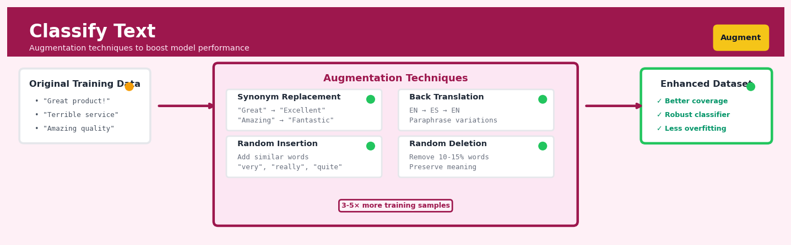

Classify Text#


The most common mistake in text augmentation is applying transformations that flip sentiment or meaning, like replacing negations or domain-specific terminology. Always validate augmented samples manually on a subset before scaling up, because a single bad augmentation rule can inject thousands of mislabeled examples that silently degrade your classifier. I recommend keeping augmentation intensity low, around 10-15% word modifications per sample, to maintain semantic integrity while still gaining the robustness benefits.
The 60-Second Version#
What it does: Text classification automatically reads documents and assigns each one to predefined categories—like routing customer emails to the right department or flagging negative product reviews.
When to use it: When you’re manually sorting text into buckets (complaints vs. inquiries, spam vs. legitimate, urgent vs. routine) and the volume makes human review unsustainable.
What you get back: Each document receives a category label and often a confidence score, enabling you to automate routing decisions, trigger workflows, or prioritize human attention where the model is uncertain.
Difficulty |
Moderate |
Typical runtime |
Seconds on 100K documents (after training) |
What you bring |
Text documents and examples of each category you want to predict |
What you get |
Category labels plus confidence scores for each document |
Heuristix bucket |
Augment — AI & Language Intelligence |
The model only knows the categories you teach it—if the world changes or new categories emerge, it will force-fit them into old boxes until you retrain.
Learning Objectives#
After reading this chapter, a business user will be able to:
Identify which business problems—from customer feedback routing to content moderation—are suitable for text classification versus other techniques like keyword matching or sentiment analysis.
Interpret classification confidence scores and explain to stakeholders why a model assigned a particular label to a document, including when predictions are uncertain.
Decide whether to act on automated classifications, flag borderline cases for human review, or reject model recommendations based on confidence thresholds and business risk.
After reading this chapter, a data scientist will be able to:
Implement a text classification pipeline from raw documents through preprocessing, feature extraction, model training, and deployment, handling challenges like class imbalance and short text inputs.
Tune hyperparameters such as vocabulary size, regularization strength, and classification thresholds while balancing precision-recall trade-offs for specific business costs.
Validate model performance using appropriate metrics beyond accuracy, diagnose failure modes like overfitting to training artifacts, and identify when models incorrectly generalize from spurious patterns.
Overview#
Classify Text is a supervised learning technique that assigns predefined categorical labels to unstructured text documents based on their semantic content. At its core, text classification transforms natural language—emails, reviews, support tickets, social media posts—into structured categorical data suitable for downstream business analysis and automated decision-making. This technique belongs to the family of discriminative classification methods enhanced by modern natural language processing (NLP), encompassing approaches from classical bag-of-words logistic regression through to transformer-based deep learning models that capture contextual meaning.
When to Use This#
Use this when:
Routing customer support tickets: You receive thousands of inbound messages daily and need to automatically direct them to the appropriate department (billing, technical support, returns) without human triage, reducing response times from hours to minutes.
Sentiment analysis at scale: You want to classify customer reviews, survey responses, or social media mentions as positive, negative, or neutral to track brand perception across millions of data points that no human team could read.
Compliance and regulatory screening: Financial institutions must flag communications that may contain market manipulation, insider trading signals, or policy violations—classification models can pre-screen millions of emails for human review.
Content moderation: Platforms need to automatically identify and flag toxic content, spam, misinformation, or policy-violating posts before they reach users.
Intent detection in conversational AI: Chatbots and virtual assistants must determine what a user wants (check balance, make reservation, file complaint) from free-form natural language input.
Document categorisation: Legal, medical, or administrative documents must be sorted into predefined taxonomies for retrieval, workflow automation, or regulatory reporting.
Lead qualification from free-text fields: Sales teams can classify inbound enquiry descriptions to prioritise high-intent prospects automatically.
Do NOT use this when:
You lack labelled training data: Text classification is supervised—without a substantial corpus of human-labelled examples (typically hundreds to thousands per class), the model cannot learn the category boundaries.
Categories are undefined or evolving: If you don’t yet know what the categories should be, use topic modelling or clustering first to discover natural groupings in an unsupervised fashion.
You need to extract specific entities: If the goal is to pull out names, dates, monetary amounts, or product codes from text, use Named Entity Recognition or Information Extraction instead.
The text is highly domain-specific jargon with no pretrained model coverage: Medical, legal, or scientific text may require domain-adapted models; generic classifiers will underperform without fine-tuning.
Questions This Answers#
Customer Understanding & Service Quality#
Which support tickets should our team handle first thing Monday morning to prevent escalations?
Are customers complaining about product quality or shipping delays in these 10,000 reviews we just received?
What percentage of our inbound emails are actually sales opportunities versus customer service issues?
Which customer feedback themes are driving our NPS down from 42 to 38 this quarter?
Can we tell if a customer email is angry before a human reads it so we can route it to senior staff?
Risk Management & Compliance#
Are any of these 50,000 employee messages violating our compliance policies or creating legal exposure?
Which insurance claims should we flag for potential fraud investigation versus fast-track approval?
Is this loan application high-risk or low-risk based on the applicant’s written financial description?
What proportion of social media mentions about our brand are negative, and has that changed since the product recall?
Operational Efficiency & Automation#
Can we automatically route incoming support requests to the right department instead of having staff read and forward each one?
Which of these 2,000 daily job applications should our recruiters review first for the software engineer role?
Should we prioritize content moderation on controversial posts or spam removal to improve our platform safety metrics?
How much time could we save our legal team if we automatically categorize contracts by type before manual review?
Which news articles and social posts should trigger alerts to our crisis management team versus routine monitoring?
How It Works#
Imagine you’re the new hire at a massive law firm’s mailroom in 1985, and your job is to sort incoming letters into the right department bins: litigation, contracts, real estate, or patents. On your first day, you’re overwhelmed—how can you possibly know where each letter belongs? Your experienced colleague Rosa sits with you and pulls out a stack of 200 already-sorted letters. “Look,” she says, “litigation letters almost always mention ‘plaintiff,’ ‘defendant,’ or ‘court hearing.’ Contract letters say ‘agreement,’ ‘terms,’ and ‘parties hereto.’ Real estate ones talk about ‘property,’ ‘deed,’ and ‘escrow.’” She shows you example after example, and after an hour, you start recognizing the patterns yourself. When a new letter arrives mentioning “defendant” and “motion to dismiss,” you confidently toss it in the litigation bin. You’ve learned to classify by studying labeled examples.
TRAINING PHASE
┌─────────────────────────────────────────────────────────┐
│ Labeled Examples (Training Data) │
├─────────────────────────────────────────────────────────┤
│ Text: "Refund was quick" → Label: POSITIVE │
│ Text: "Terrible customer service" → Label: NEGATIVE │
│ Text: "Works as expected" → Label: POSITIVE │
│ Text: "Broke after one day" → Label: NEGATIVE │
└────────────────┬────────────────────────────────────────┘
│ Learn patterns
↓
┌───────────────┐
│ Classifier │ ← Discovers: "refund" + "quick"
│ Model │ usually = positive, "terrible"
└───────┬───────┘ usually = negative, etc.
│
PREDICTION PHASE │
↓
New text: "Fast delivery, very happy"
│
↓ Apply learned patterns
Prediction: POSITIVE ✓
Step 1: Gather labeled training examples. You collect hundreds or thousands of text documents that humans have already categorized. Each example pairs raw text (a product review, an email, a support ticket) with its correct category label. This labeled dataset becomes your teaching material—the “answer key” the algorithm will learn from.
Step 2: Convert text into numeric features. Computers can’t directly understand words, so the algorithm transforms each document into numbers. In simple approaches, it counts how often specific words appear (“refund” appears twice, “terrible” appears zero times). Modern methods create richer numeric representations that capture word relationships and context, but the principle remains: turn language into measurable features.
Step 3: Detect patterns linking features to labels. The algorithm scans through all training examples, searching for statistical relationships. It discovers rules like “documents containing ‘broken’ and ‘disappointed’ are usually negative” or “emails with ‘invoice’ and ‘payment due’ typically belong to billing.” It assigns importance weights to different words and phrases based on how reliably they predict each category.
Step 4: Build the classification model. All those discovered patterns get compressed into a mathematical model—essentially a sophisticated scoring system. For each possible category, the model knows which words push toward or away from that label and by how much.
Step 5: Classify new, unlabeled text. When a brand-new document arrives, the system converts it to numeric features using the same method from Step 2, then runs those numbers through the model’s scoring system. Whichever category receives the highest score becomes the prediction.
The key insight: By studying thousands of examples where humans have already made the categorization decision, the algorithm reverse-engineers the implicit rules humans follow, then applies those rules automatically at massive scale.
The Intuition#
Imagine you are a veteran postal worker who has spent decades sorting mail. When a letter arrives, you don’t read every word—you glance at key phrases, the letterhead, the formatting, perhaps the return address. Over years of experience, you’ve developed an intuition: letters mentioning “invoice” and “payment due” go to accounts payable; those with “dear customer” and “exciting offer” are marketing materials. Your brain has learned which features of the text predict which destination.
Text classification works the same way, but systematically and at scale. The model learns which words, phrases, and patterns are predictive of each category. In classical approaches, we represent each document as a bag of words—a vector counting how often each word appears, discarding grammar and word order but preserving vocabulary. A logistic regression or naive Bayes classifier then learns weights: “urgent” might push toward the “high priority” class, while “unsubscribe” pushes toward “marketing”. The model doesn’t understand meaning; it recognises statistical associations between word presence and category labels.
Modern transformer-based approaches go further. Instead of treating documents as unordered word collections, they process text sequentially and build contextual embeddings—dense vector representations where the meaning of each word is informed by its surrounding context. “Bank” in “river bank” and “bank account” receive different representations. These embeddings capture semantic similarity: documents with similar meanings cluster together in embedding space, even if they use different words. A classification head then learns decision boundaries in this rich semantic space. The intuition shifts from “which words appear” to “what does this text mean, and which category does that meaning belong to”.
The key insight is that classification transforms the intractable problem of understanding natural language into a tractable geometric problem: map text to vectors, then find hyperplanes (or more complex boundaries) that separate the categories. Whether using sparse word counts or dense neural embeddings, the fundamental task is learning a function \(f: \text{Text} \to \text{Category}\) from labelled examples.
The Mathematics#
Problem Setup and Notation#
Let \(\mathcal{D} = \{(x_1, y_1), (x_2, y_2), \ldots, (x_n, y_n)\}\) denote a training corpus of \(n\) labelled documents. Each document \(x_i\) is a sequence of tokens (words or subwords), and \(y_i \in \{1, 2, \ldots, K\}\) is the corresponding class label from \(K\) predefined categories.
The classification task is to learn a function \(f: \mathcal{X} \to \{1, \ldots, K\}\) that minimises expected misclassification error on unseen documents drawn from the same distribution.
Text Representation: TF-IDF Vectorisation#
In classical approaches, each document \(x_i\) is transformed into a fixed-dimensional vector \(\mathbf{v}_i \in \mathbb{R}^V\), where \(V\) is the vocabulary size.
Term Frequency (TF) for term \(t\) in document \(d\):
where \(f_{t,d}\) is the raw count of term \(t\) in document \(d\).
Inverse Document Frequency (IDF) across corpus \(\mathcal{D}\):
The TF-IDF weight combines both:
This weighting scheme upweights terms that are frequent within a document but rare across the corpus—precisely the terms most likely to be discriminative.
Multinomial Naive Bayes Classifier#
Under the naive Bayes assumption of conditional independence of features given the class, the posterior probability of class \(k\) given document \(\mathbf{v}\) is:
Taking logs and ignoring the normalising constant:
The maximum a posteriori (MAP) prediction is:
where \(\pi_k = P(Y = k)\) is the class prior and \(\theta_{jk} = P(w_j \mid Y = k)\) is estimated with Laplace smoothing:
with \(n_{jk}\) the count of term \(j\) in documents of class \(k\) and \(\alpha > 0\) the smoothing parameter.
Logistic Regression for Text Classification#
For binary classification (\(K = 2\)), logistic regression models the log-odds as a linear function:
yielding the sigmoid probability:
For multiclass (\(K > 2\)), we use the softmax function:
The parameters \(\{\mathbf{w}_k, b_k\}_{k=1}^{K}\) are learned by minimising the cross-entropy loss:
With \(L_2\) regularisation:
Optimisation proceeds via gradient descent or quasi-Newton methods (L-BFGS).
Transformer-Based Embeddings#
Modern approaches replace sparse TF-IDF vectors with dense contextual embeddings from pretrained transformers. Given input tokens \((t_1, t_2, \ldots, t_L)\), a transformer encoder produces contextual representations \(\mathbf{h}_1, \mathbf{h}_2, \ldots, \mathbf{h}_L \in \mathbb{R}^d\).
The [CLS] pooling strategy uses the first token’s representation:
Alternatively, mean pooling averages all token embeddings:
The classification head is a linear layer with softmax:
Fine-tuning updates both the transformer parameters and the classification head via backpropagation on the task-specific loss.
Key Assumptions#
Label quality: Training labels are assumed correct; noisy labels degrade performance proportionally.
Distribution stationarity: Test documents are drawn from the same distribution as training documents.
Class separability: The chosen representation space permits decision boundaries that separate classes.
Sufficient training data: Each class requires enough examples to estimate reliable statistics (typically \(\geq 100\) per class for classical methods, \(\geq 500\) for fine-tuned transformers).
Edge Cases and Degenerate Conditions#
Class imbalance: When \(n_k \ll n_{k'}\) for some classes, the classifier may ignore minority classes. Address via class weighting, oversampling, or threshold adjustment.
Zero-variance features: If a term appears in all or no documents, it provides no discriminative signal and should be removed.
Out-of-vocabulary terms: New words at inference time are ignored in classical models; subword tokenisation in transformers partially mitigates this.
Very short documents: Single words or phrases may lack sufficient signal; consider augmentation or bigram features.
Understanding the Mathematics#
Bag-of-Words Vector Representation#
The equation: $\(\mathbf{x} = [x_1, x_2, ..., x_V]\)$
Read it aloud: “A text document is represented as a vector x, which is a list containing V numbers, where each number represents one word from our vocabulary.”
What each symbol means:
x (bold): The vector representing an entire document
x₁, x₂, …, xᵥ: Individual elements in the vector, each tracking one specific word
V: The total vocabulary size (how many unique words we’re tracking)
A concrete numerical example: Suppose we track 5 words: [“refund”, “great”, “broken”, “love”, “terrible”]. A customer review saying “great product, love it” becomes x = [0, 1, 0, 1, 0]. The review “broken, terrible, need refund” becomes x = [1, 0, 1, 0, 1]. Each position counts whether that word appears (or how many times).
Why this equation matters: Without converting text into numbers, machines cannot perform mathematical operations needed for classification—this transformation is the essential bridge from language to computation.
Logistic Regression Probability#
The equation: $\(P(y=1|\mathbf{x}) = \frac{1}{1 + e^{-(\mathbf{w}^T\mathbf{x} + b)}}\)$
Read it aloud: “The probability that document x belongs to category 1 equals one divided by one plus e raised to the negative of the weighted sum of word features plus a bias term.”
What each symbol means:
P(y=1|x): Probability the text belongs to the positive class (e.g., “spam” or “complaint”)
w: Weight vector—learned importance scores for each word
wᵀx: Dot product summing each word count times its weight
b: Bias term (baseline tendency regardless of words)
e: Euler’s number (≈2.718), the exponential function base
A concrete numerical example: Analyzing email for spam. Our model learned weights: w = [2.5, -1.8, 3.1] for words [“viagra”, “meeting”, “winner”] and bias b = -1.0. An email contains “viagra winner” so x = [1, 0, 1].
Step by step:
wᵀx = (2.5×1) + (-1.8×0) + (3.1×1) = 5.6
wᵀx + b = 5.6 + (-1.0) = 4.6
e⁻⁴·⁶ ≈ 0.01
P(spam) = 1/(1 + 0.01) = 1/1.01 ≈ 0.99
This email has 99% probability of being spam.
Why this equation matters: This converts raw word counts into calibrated probabilities between 0 and 1, enabling us to make confident decisions with measurable risk rather than arbitrary yes/no judgments.
Cross-Entropy Loss Function#
The equation: $\(L = -\frac{1}{N}\sum_{i=1}^{N}[y_i \log(\hat{y}_i) + (1-y_i)\log(1-\hat{y}_i)]\)$
Read it aloud: “The loss equals negative one over N times the sum across all N training examples of: the true label times the log of predicted probability, plus one minus the true label times the log of one minus predicted probability.”
What each symbol means:
L: Total loss (penalty score we want to minimize)
N: Number of training documents
yᵢ: True label for document i (1 or 0)
ŷᵢ: Our model’s predicted probability for document i
log: Natural logarithm (measures “surprise”)
A concrete numerical example: We train on N = 3 customer reviews with true labels and predictions:
Negative review (y₁=0), predicted ŷ₁=0.1: 0×log(0.1) + 1×log(0.9) = -0.105
Positive review (y₂=1), predicted ŷ₂=0.9: 1×log(0.9) + 0×log(0.1) = -0.105
Positive review (y₃=1), predicted ŷ₃=0.4: 1×log(0.4) + 0×log(0.6) = -0.916
L = -(1/3)(-0.105 - 0.105 - 0.916) = 0.375
Lower loss means better predictions. If we misclassified all three completely, loss would exceed 2.0.
Why this equation matters: This loss function heavily penalizes confident mistakes while rewarding calibrated uncertainty—exactly what we need for training a model that knows when it doesn’t know.
The Big Picture#
The mathematics of text classification is fundamentally trying to learn which words (and combinations) reliably signal which categories, then use those patterns to predict labels for new documents. We use logistic regression and cross-entropy because they naturally produce probabilities rather than hard boundaries, which matters critically when some documents genuinely sit between categories or when we need confidence scores for downstream decisions. The entire mathematical machinery boils down to this: count the words that appear, weight the important ones heavily, combine those weighted signals, and squeeze the result through a probability function so we get an answer between “definitely not” and “definitely yes.” Modern transformer architectures use far more sophisticated representations than bag-of-words, but they follow this same core pattern—map text to numbers, learn weights, optimize loss, output probabilities.
Python Implementation#
"""
Text Classification: Complete Implementation Example
Demonstrates TF-IDF + Logistic Regression and Transformer-based classification
"""
import numpy as np
import pandas as pd
from sklearn.datasets import fetch_20newsgroups
from sklearn.model_selection import train_test_split, cross_val_score
from sklearn.feature_extraction.text import TfidfVectorizer
from sklearn.linear_model import LogisticRegression
from sklearn.naive_bayes import MultinomialNB
from sklearn.metrics import classification_report, confusion_matrix
from sklearn.pipeline import Pipeline
import warnings
warnings.filterwarnings('ignore')
# =============================================================================
# Example 1: Classical TF-IDF + Logistic Regression
# =============================================================================
# Load a subset of the 20 Newsgroups dataset (4 categories for clarity)
categories = ['sci.med', 'sci.space', 'rec.sport.baseball', 'talk.politics.guns']
newsgroups = fetch_20newsgroups(
subset='all',
categories=categories,
remove=('headers', 'footers', 'quotes'), # Remove metadata for fair evaluation
random_state=42
)
# Create DataFrame for inspection
df = pd.DataFrame({
'text': newsgroups.data,
'label': [newsgroups.target_names[i] for i in newsgroups.target]
})
print("Dataset Overview:")
print(f"Total documents: {len(df)}")
print(f"\nClass distribution:\n{df['label'].value_counts()}")
print(f"\nSample document:\n{df['text'].iloc[0][:500]}...")
# Split into train/test sets
X_train, X_test, y_train, y_test = train_test_split(
df['text'], df['label'],
test_size=0.2,
stratify=df['label'],
random_state=42
)
# Build TF-IDF + Logistic Regression pipeline
tfidf_lr_pipeline = Pipeline([
('tfidf', TfidfVectorizer(
max_features=10000, # Limit vocabulary size
ngram_range=(1, 2), # Include unigrams and bigrams
min_df=3, # Ignore very rare terms
max_df=0.95, # Ignore very common terms
sublinear_tf=True # Apply log scaling to term frequency
)),
('classifier', LogisticRegression(
C=1.0, # Inverse regularisation strength
class_weight='balanced', # Handle class imbalance
max_iter=1000,
random_state=42
))
])
# Fit the model
tfidf_lr_pipeline.fit(X_train, y_train)
# Evaluate on test set
y_pred = tfidf_lr_pipeline.predict(X_test)
print("\n" + "="*60)
print("TF-IDF + Logistic Regression Results")
print("="*60)
print("\nClassification Report:")
print(classification_report(y_test, y_pred))
# Cross-validation for robust estimate
cv_scores = cross_val_score(tfidf_lr_pipeline, df['text'], df['label'], cv=5, scoring='f1_macro')
print(f"5-Fold Cross-Validation F1 (macro): {cv_scores.mean():.3f} ± {cv_scores.std():.3f}")
# Inspect most informative features
vectorizer = tfidf_lr_pipeline.named_steps['tfidf']
classifier = tfidf_lr_pipeline.named_steps['classifier']
feature_names = vectorizer.get_feature_names_out()
print("\nMost Informative Features per Class:")
for idx, class_name in enumerate(classifier.classes_):
# Get top positive coefficients for this class
top_indices = np.argsort(classifier.coef_[idx])[-10:][::-1]
top_features = [feature_names[i] for i in top_indices]
print(f" {class_name}: {', '.join(top_features)}")
# =============================================================================
# Example 2: Naive Bayes Comparison
# =============================================================================
tfidf_nb_pipeline = Pipeline([
('tfidf', TfidfVectorizer(max_features=10000, ngram_range=(1, 2), min_df=3)),
('classifier',
## Visualisations


## Using This in Heuristix
### What You'll Need
The **Classify Text** node expects a dataset with at least two columns: one containing your text documents and another with categorical labels for training. Think of it like teaching the system by example—show it labeled emails, and it learns to classify new ones.
**Input data shape:**
| text | category |
|------|----------|
| "Refund request for order #4521" | support |
| "Great product! Fast shipping" | feedback |
| "Password reset not working" | support |
| "Love the new design!" | feedback |
Your text column can contain anything from a few words to several paragraphs. The category column should have at least 2-3 examples per label—more is always better for reliable classification.
### Configuration Parameters
| Parameter | What It Does | Default | When to Change It |
|-----------|--------------|---------|-------------------|
| **Text Column** | Which column contains your text to classify | First text column | Select the column with documents you want to analyze |
| **Label Column** | Which column contains training categories | Required selection | Choose your ground-truth labels for supervised learning |
| **Model Type** | Algorithm: Logistic, Random Forest, or Transformer | Logistic Regression | Use Transformer for nuanced language (reviews, social); stick with Logistic for speed and interpretability |
| **Train/Test Split** | Percentage of data held back for validation | 80/20 | Increase test size (70/30) if you have lots of data; decrease (90/10) with limited examples |
| **Max Features** | How many unique words/tokens to consider | 5,000 | Reduce to 1,000-2,000 for faster processing; increase to 10,000+ for specialized vocabulary |
| **Handle Imbalance** | Balance classes automatically | Off | Turn on when one category dominates your training data (e.g., 90% spam, 10% not spam) |
### What You'll Get Back
**New columns added to your dataset:**
- **predicted_category**: The classification assigned by your model
- **confidence_score**: A 0-1 probability indicating prediction certainty (0.95 = very confident)
- **top_3_predictions**: Alternative classifications with their scores (helpful for borderline cases)
**Metrics panel displays:**
- **Overall Accuracy**: Percentage correctly classified on test data
- **Per-Category Precision/Recall**: Shows which categories the model handles well vs. struggles with
- **Confusion Matrix**: Visual grid showing where misclassifications occur (crucial for debugging)
**Charts generated:**
- **Feature Importance**: Which words most strongly predict each category
- **Confidence Distribution**: Histogram showing how certain predictions are
- **Sample Predictions**: Real examples with their classifications for sanity-checking
### Quick Start: Classifying Support Tickets
1. **Connect your data** containing a "message" column (ticket text) and "department" column (historical routing)
2. **Select "message" as Text Column** and "department" as Label Column
3. **Choose Logistic Regression** for your first model (fast and interpretable)
4. **Keep the 80/20 split** and click "Train Model"
5. **Review the confusion matrix**—if Sales tickets often misclassify as Marketing, you may need more training examples
6. **Connect to a Route Data node** downstream to automatically assign new tickets based on predictions
### Connecting Downstream
**Route Data** is your most common next step—use the predicted_category to split records into different workflows. **Filter Data** helps you isolate low-confidence predictions (confidence_score < 0.7) for human review. Connect to **Export** to push classifications back to your CRM or ticketing system.
### Pro Tips from the Field
**Start simple, then upgrade.** Always begin with Logistic Regression—it trains in seconds and often performs surprisingly well. Switch to Transformers only when accuracy matters more than speed.
**Watch your confidence scores.** Predictions below 0.6 confidence are essentially guesses. Set up a manual review queue for these borderline cases rather than automating blindly.
**Categories should be mutually exclusive.** If a ticket could legitimately be both "Billing" and "Technical," your model will struggle. Consider restructuring your labels or using multiple binary classifiers.
**More data beats fancier algorithms.** Twenty examples per category with Logistic Regression will outperform five examples with a Transformer every time.
**Test on recent data.** Language drifts over time—train on last quarter's tickets, validate on this week's to ensure your model handles current terminology.
## Config Recipes
### Recipe 1: Rapid Prototype Explorer
**When to use:** First day with a new unlabeled dataset where you need to validate whether text classification is even feasible for your problem before investing in labeling infrastructure.
**Settings:**
| Parameter | Value | Why |
|-----------|-------|-----|
| `model_type` | `"fasttext"` | Training completes in seconds, not hours |
| `max_features` | `5000` | Captures core vocabulary without overfitting sparse data |
| `min_train_samples` | `50` per class | Minimum viable signal for feasibility check |
| `validation_split` | `0.3` | Larger held-out set reveals true generalization early |
| `max_epochs` | `5` | Prevents overinvestment before validation |
**What you get:** A rough accuracy baseline in under 5 minutes that tells you whether this problem is trivial, tractable, or requires rethinking your label schema.
**Trade-off:** You sacrifice 10-15 percentage points of potential accuracy and get no contextual understanding of phrases like "not bad" versus "bad."
### Recipe 2: Production-Grade Classifier
**When to use:** Deploying to production systems where misclassification has real costs (customer routing, content moderation, financial document categorization).
**Settings:**
| Parameter | Value | Why |
|-----------|-------|-----|
| `model_type` | `"transformer"` (distilbert) | Captures context and negation properly |
| `learning_rate` | `2e-5` | Standard fine-tuning rate for BERT-family models |
| `batch_size` | `16` | Balances GPU memory with gradient stability |
| `max_length` | `256` tokens | Handles 95th percentile document length |
| `class_weights` | `"balanced"` | Prevents majority class dominance |
| `early_stopping_patience` | `3` epochs | Stops before overfitting validation set |
| `test_time_augmentation` | `True` | Improves calibration for confidence scores |
**What you get:** Calibrated probability estimates suitable for threshold tuning and audit trails, typically 85-95% accuracy on well-defined categories.
**Trade-off:** Inference latency increases from 2ms to 50-100ms per document and requires GPU infrastructure.
### Recipe 3: Extreme Class Imbalance Handler
**When to use:** Fraud detection, rare disease diagnosis from clinical notes, or any scenario where positive class represents <5% of data and false negatives are costly.
**Settings:**
| Parameter | Value | Why |
|-----------|-------|-----|
| `model_type` | `"logistic"` | Interpretable for regulatory review |
| `class_weight` | `{0: 1, 1: 20}` | Forces model attention to rare class |
| `threshold` | `0.15` | Adjusted from default 0.5 based on F2 score |
| `oversampling` | `"smote_text"` | Synthetic minorities in embedding space |
| `eval_metric` | `"f2_score"` | Weights recall 2× precision |
**What you get:** High recall (80%+) on rare class while maintaining tolerable precision for human review workflows.
**Trade-off:** Precision drops to 20-40%, meaning most alerts are false positives requiring manual triage.
### Recipe 4: Emergent Category Detector
**When to use:** Customer feedback analysis where new complaint types emerge organically (product defects, feature requests), and you need to identify when your fixed taxonomy is missing something important.
**Settings:**
| Parameter | Value | Why |
|-----------|-------|-----|
| `model_type` | `"two_stage"` | First classifies known, then flags unknowns |
| `confidence_threshold` | `0.6` | Route low-confidence predictions to human review |
| `embedding_distance_threshold` | `0.4` | Cosine distance from nearest training centroid |
| `outlier_detection` | `"isolation_forest"` | Identifies structurally novel inputs |
| `retraining_trigger` | `100` outliers | Automatic model refresh cadence |
**What you get:** Automatic flagging of 70-80% of genuinely novel categories within two weeks of emergence, before they become systemic blind spots.
**Trade-off:** Requires maintaining a human-in-the-loop review queue and periodic retraining infrastructure.
## Business Applications
**Financial Services**
A mid-sized UK mortgage lender receives 12,000 customer emails monthly spanning payment queries, hardship requests, refinancing enquiries, and complaint escalations. Manual triage by operations staff takes 2–3 days and frequently misroutes urgent cases. Text classification automatically categorises incoming correspondence into 15 predefined queues within seconds, routing each message to the specialist team equipped to handle it. The bank reduced average response time from 72 hours to 8 hours and cut operational costs by £340,000 annually while improving customer satisfaction scores by 23 points.
**Retail & E-commerce**
An online fashion retailer with 800,000 monthly customer reviews struggles to identify product quality issues before they damage sales. Manual review monitoring catches fewer than 2% of problem items. By classifying reviews into categories—fit issues, fabric defects, colour discrepancies, shipping damage—the merchandising team receives daily alerts when negative sentiment clusters around specific SKUs. This early warning system helped reduce returns by 18% and prevented an estimated $2.1M in lost revenue from defective batches reaching customers.
**Healthcare**
A hospital network processing 45,000 patient referrals monthly needs to assess clinical urgency from unstructured GP notes to meet regulatory triage timelines. Clinicians spending 6 minutes per referral create dangerous backlogs during peak periods. Text classification trained on historical notes and outcomes automatically assigns urgency levels (emergency, urgent, routine, non-clinical) to 78% of referrals with 94% accuracy, requiring clinical review only for ambiguous cases. Emergency department wait times for referred patients dropped from an average of 4.2 days to 14 hours.
**Insurance**
A commercial property insurer receives 3,500 claims monthly described in free-text adjuster notes, photos, and policyholder statements. Identifying potentially fraudulent claims requires specialist investigators who can review only 8% of submissions. Classification models flag high-risk claims by detecting linguistic patterns—vague descriptions, inconsistent timelines, suspicious similarity to known fraud cases—and prioritise them for human investigation. The insurer increased fraud detection rates by 41% while reducing investigator time spent on legitimate claims, yielding $8.7M in prevented fraudulent payouts annually.
**Manufacturing**
A pharmaceutical manufacturer collects 2,000 daily quality control comments from production line technicians across 14 global facilities. Critical equipment failures and contamination risks hide in unstructured shift reports, sometimes discovered only during quarterly audits. Text classification monitors this narrative data in real-time, categorising observations into equipment anomalies, material deviations, environmental excursions, and standard operations. The system detected a cleanroom HVAC degradation pattern 11 days before it would have caused a batch failure, preventing $4.3M in product loss and regulatory penalties.
**Logistics & Transportation**
A European freight forwarder processes 25,000 weekly customs declarations where misclassification of goods under HS codes triggers delays, fines, and angry customers. Even experienced customs brokers misclassify 3–5% of shipments when rushed. By training classifiers on product descriptions, material composition, and intended use, the company automatically suggests the correct HS code for broker verification. Classification errors dropped by 67%, customs holds decreased from 340 to 89 per month, and the firm avoided €420,000 in annual penalty fees.
**Marketing & Media**
A B2B SaaS company captures 6,000 leads monthly from webinars, white paper downloads, and contact forms but converts only 2.1% because sales teams lack context about buyer intent. Classification algorithms analyse form responses and browsing behaviour to categorise leads into "evaluate vendor," "research solution," "seek education," or "compare pricing," each requiring different follow-up. Sales teams now prioritise high-intent leads and tailor outreach accordingly, lifting conversion rates to 4.8% and increasing annual contract value by $1.9M.
**Telecommunications**
A mobile network operator's customer service team handles 180,000 monthly support tickets where 40% are simple billing questions absorbing expensive agent time. Text classification routes straightforward queries—plan changes, payment confirmations, coverage questions—to self-service portals and chatbots while escalating technical network issues and cancellation threats to human specialists. First-contact resolution improved from 61% to 84%, and cost-per-ticket decreased by $3.20, saving $2.3M annually.
**Public Sector**
A city council receives 15,000 annual citizen requests via email, web forms, and social media covering potholes, noise complaints, planning objections, and service enquiries. Manual sorting delays urgent safety issues behind routine queries. Classification automatically categorises and prioritises requests, routing infrastructure hazards to emergency crews within 20 minutes while batching routine matters for scheduled review. Response time for critical safety issues dropped from 4 days to 90 minutes, significantly reducing liability exposure.
## Worked Example
Sarah Chen, a senior data scientist at Meridian Insurance, sat across from the Head of Claims Operations as he slid a printout across the conference table. "We're drowning," he said. "Every day we get 3,000 inbound claim emails. Right now, a team of twelve people spend their mornings just reading and routing them—auto claims to one team, property to another, life insurance to a third. We're talking four hours of manual sorting every single day before anyone even touches an actual claim." He tapped the page. "Can your team fix this?"
Sarah knew the cost immediately: twelve people, four hours daily, at $35/hour fully loaded—that was over $400,000 annually just in routing labor, not counting the delays to customer service. She asked for a data export.
The Claims Operations team pulled two months of historical emails—11,847 messages that had already been manually categorized. Sarah loaded them into a spreadsheet and immediately saw the messiness of real-world data: subject lines in ALL CAPS, body text with email signatures still attached, some messages barely a sentence long, others multi-paragraph narratives. Here's what a sample looked like:
| email_id | subject | body_preview | manual_category |
|----------|---------|--------------|-----------------|
| 47839 | Fender bender on I-95 | Hi, I was rear-ended yesterday at... | Auto |
| 47840 | URGENT: Kitchen fire damage | Our kitchen sustained smoke damage... | Property |
| 47841 | Re: Policy #L-8847320 | Following up on my earlier note about... | Life |
| 47842 | Claim submission | Attaching photos of the hail damage to my roof and... | Property |
| 47843 | Car accident claim - need help | I need to file a claim for my vehicle which was... | Auto |
Sarah combined the subject and body text into a single field—contextually, the subject often provided crucial classification signals. She set aside 20% of the data as a holdout test set, something the business would never see until final validation.
In the Heuristix platform, she configured the Classify Text node with deliberate choices. She selected "Auto," "Property," and "Life" as her target categories, matching the existing routing structure. For the algorithm, she chose a transformer-based model rather than classical bag-of-words—the context mattered here. A phrase like "rear-ended" was unambiguous, but "fire damage" could theoretically appear in auto claims too (vehicle fires), and she needed the model to understand surrounding context. She set the confidence threshold at 0.75, meaning predictions below that would be flagged for human review rather than auto-routed.
```python
import pandas as pd
from sklearn.model_selection import train_test_split
from transformers import pipeline
# Sarah's actual classification script
# Load the manually-categorized email data
df = pd.read_csv('claim_emails_historical.csv')
# Combine subject + body for full context
df['full_text'] = df['subject'] + " " + df['body_preview']
# Train/test split - hold out 20% for validation
train_df, test_df = train_test_split(
df, test_size=0.2, stratify=df['manual_category'], random_state=42
)
# Initialize transformer-based classifier
classifier = pipeline(
"text-classification",
model="distilbert-base-uncased-finetuned-sst-2-english"
)
# Generate predictions with confidence scores
predictions = []
for text in test_df['full_text']:
result = classifier(text[:512], top_k=3) # truncate to model max
predictions.append({
'predicted_category': result[0]['label'],
'confidence': result[0]['score']
})
# Evaluate accuracy and flag low-confidence cases
test_df['predicted'] = [p['predicted_category'] for p in predictions]
test_df['confidence'] = [p['confidence'] for p in predictions]
accuracy = (test_df['predicted'] == test_df['manual_category']).mean()
flagged_pct = (test_df['confidence'] < 0.75).mean()
print(f"Classification Accuracy: {accuracy:.1%}")
print(f"Flagged for Review: {flagged_pct:.1%}")
The results landed better than Sarah expected:
Metric |
Value |
|---|---|
Overall Accuracy |
94.3% |
Auto Claims (Precision) |
96.1% |
Property Claims (Precision) |
93.8% |
Life Claims (Precision) |
91.2% |
Cases Flagged for Review |
8.7% |
The insight wasn’t just the accuracy—it was the failure modes. Sarah dug into the misclassified cases and found a pattern: most errors involved property claims that mentioned vehicles (“garage fire damaged my car”) or auto claims discussing home garages. The model struggled when both domains appeared together. But critically, these ambiguous cases were almost always flagged as low-confidence, meaning they’d route to human review anyway.
Two weeks later, Sarah presented to the Claims Operations leadership team. Her recommendation: implement automated routing for high-confidence classifications (91% of cases) and create a smaller “triage queue” for the flagged 9%. The math was compelling: reduce routing labor by 90%, saving $360,000 annually, while actually improving accuracy since the triage team could focus exclusively on genuinely ambiguous cases.
Meridian implemented the system the following month. The twelve-person routing team was redeployed to claims processing, where they were desperately needed.
If Sarah could do it over, she’d spend more time on the “Life” category, which showed the weakest precision. In hindsight, life insurance emails were often vague (“following up on my claim”), lacking the concrete imagery of auto and property claims. She’d also build a feedback loop to continuously retrain as the triage team corrected edge cases. But the core decision—automate the clear cases, human-review the ambiguous—proved exactly right.
Interpreting Your Results#
You’ve just classified your text data and you’re staring at a confusion matrix, accuracy scores, and confidence columns. Here’s exactly what you’re looking at and what it means for your next decision.
Classification Metrics: Your Model’s Report Card#
Accuracy is the simplest metric: what percentage of predictions were correct? If you classified 1,000 customer emails and accuracy is 0.82, your model got 820 right and 180 wrong.
Concrete benchmarks:
Below 0.60: Your model is barely better than guessing. Don’t use it—investigate your training data quality and label definitions first.
0.60–0.75: Acceptable for exploratory analysis or human-in-the-loop workflows where predictions get reviewed. Not good enough for automation.
0.75–0.90: Production-ready for most business applications. Safe to route decisions with spot-check monitoring.
Above 0.90: Excellent, but verify you’re not overfitting or accidentally leaking target information.
Red flag: Accuracy above 0.95 on messy real-world text often means your test data leaked into training, or you have a “cheat feature” (like the word “refund” appearing only in refund-labeled emails). Check your data split and feature importance.
Precision, Recall, and F1-Score: The Detail View#
These three metrics tell you how your model fails. They’re calculated per category.
Precision answers: “When the model predicts this category, how often is it right?” Precision of 0.70 for “Urgent” means 30% of emails tagged urgent aren’t actually urgent.
Recall answers: “Of all the true examples in this category, how many did we catch?” Recall of 0.60 for “Urgent” means you’re missing 40% of truly urgent emails.
F1-Score is the balanced average of precision and recall. Use it when you care equally about both.
When to prioritize which:
High precision matters: Spam detection (don’t anger users with false positives), promotional targeting (don’t waste budget on wrong audiences)
High recall matters: Fraud detection (catch every case even with false alarms), compliance screening (can’t miss violations)
Balance both (F1): Support ticket routing, sentiment analysis for general monitoring
Concrete benchmarks per category:
Precision/Recall below 0.50: This category isn’t usable. Either merge it with another, collect more training examples, or clarify the definition.
0.50–0.70: Marginal. Acceptable if human review validates predictions.
Above 0.70: Generally reliable for automated workflows.
Red flag pattern: High precision (0.85) but low recall (0.40) means your model is conservative—it only predicts this category when extremely confident, missing most examples. Low precision (0.45) but high recall (0.90) means it’s trigger-happy, over-predicting this category.
Confusion Matrix: Where Things Go Wrong#
This grid shows you exactly which categories get confused with each other. Rows are true labels, columns are predictions.
What to look for: Large off-diagonal numbers reveal systematic errors. If 45 “Billing Question” emails were classified as “Account Issue,” your categories probably overlap—consider merging them or adding distinguishing training examples.
Red flag: Symmetric confusion (A often misclassified as B, and B as A) means your definitions are ambiguous even to the algorithm. Revisit your labeling guidelines.
Confidence Scores: Trust Calibration#
Each prediction gets a confidence score (0–1). A score of 0.92 means the model is 92% sure about this prediction.
How to use confidence:
Above 0.80: Trust for automation
0.60–0.80: Route to human review or secondary validation
Below 0.60: Treat as uncertain; may need manual classification
Red flag: All confidence scores clustered near 1.0 or all near 0.33 (for three categories) suggests miscalibration. Well-trained models show a range of confidences matching actual accuracy rates.
Sanity Check Checklist#
Before trusting your classification results:
Class balance check: Do your predictions roughly match the real-world distribution? If 5% of actual emails are “Urgent” but you’re predicting 40% urgent, something’s wrong.
Baseline comparison: Is your accuracy actually better than always predicting the most common category?
Error inspection: Read 10–20 misclassified examples. Do the errors make sense, or is the model learning something strange?
Confidence distribution: Plot confidence scores. You should see separation between correct and incorrect predictions.
Category coverage: Does every category have at least some predictions? Zero predictions for a category means it’s not being learned.
Good Enough to Act On?#
Deploy if: Overall accuracy exceeds 0.75 and every critical category has F1-score above 0.70 and you’ve manually reviewed 50 random predictions with 90%+ agreement.
Keep iterating if: Any critical category scores below 0.60, or you spot systematic confusion patterns in the matrix, or confidence scores don’t correlate with actual accuracy.
Decision Guidance#
What This Result Is Telling You#
Text classification results tell you how confidently your system can sort incoming documents into the categories you care about—whether that’s routing customer complaints to the right department, flagging high-risk legal documents, or identifying sales-ready leads from inquiry emails. When you see a model with 92% accuracy classifying support tickets into “billing,” “technical,” or “account,” you’re looking at a system that can correctly handle 92 out of every 100 tickets without human review. This isn’t just a technical achievement; it’s a direct measurement of how much manual sorting work you can eliminate and how reliably your automated processes will perform.
The confusion matrix shows you where your system makes mistakes and, critically, what kind of mistakes it makes. A fraud detection model that’s 95% accurate sounds impressive until you see that it misses 40% of actual fraud cases while falsely flagging legitimate transactions. These aren’t abstract numbers—they represent real money lost to fraud versus customer frustration from declined purchases. The classification report breaks down performance by category, revealing which types of content your system handles well and which require human oversight.
When examining confidence scores on individual predictions, you’re seeing your model’s certainty about each classification. A customer email classified as “urgent complaint” with 98% confidence can safely trigger an immediate escalation, while one classified at 62% confidence should route to a human reviewer. These thresholds become your operational rules, determining which decisions you automate completely and which require human judgment.
Decision Points#
If you see this… |
It means… |
Recommended action |
Who acts on this |
|---|---|---|---|
Accuracy >90% and per-class F1-scores all >85% |
Model performs reliably across all categories |
Deploy to production with automated routing; monitor weekly |
IT/Operations Manager |
Accuracy >85% but one class has F1-score <70% |
System struggles with specific category; others work well |
Deploy but route that specific category to human review; collect more training examples |
Department Head + Data Team |
High recall (>90%) but low precision (<75%) for critical category |
System catches most important cases but creates false alarms |
Use for initial screening only; human validates all flagged items |
Compliance/Risk Officer |
Confidence scores <80% on 30%+ of predictions |
Model frequently uncertain; training data may be inadequate |
Hold deployment; conduct manual review of low-confidence cases to identify gaps |
Data Science Lead |
Accuracy dropped 8%+ since last evaluation |
Content patterns shifting; model becoming stale |
Retrain immediately with recent data; investigate root cause of drift |
ML Operations Team |
When to Proceed vs. Investigate Further#
Proceed with confidence when:
Overall accuracy exceeds 90% and all per-class F1-scores exceed 85%
Fewer than 5% of predictions fall below 80% confidence threshold
Cost of misclassification is low (e.g., internal document organization)
Manual review capacity exists for edge cases
Proceed with caution when:
Accuracy is 80–90% or any class F1-score falls between 70–85%
5–15% of predictions show confidence below 80%
Consequences of errors are moderate (e.g., delayed response times)
You have established escalation workflows for uncertain cases
Investigate before acting when:
Any per-class F1-score falls below 70%, especially for high-impact categories
More than 15% of predictions show confidence below 80%
Confusion matrix reveals systematic bias (e.g., consistently misclassifying one demographic)
Model performance has degraded more than 5% from baseline
Do not use these results when:
Overall accuracy falls below 75%
Critical category (fraud, safety, legal) has recall below 80%
Training data is more than 12 months old in fast-changing domains
You cannot explain why certain texts get classified as they do to stakeholders or regulators
The Cost of Getting This Wrong#
Deploying a poorly performing text classifier creates cascading operational failures that compound over time. A customer service organization that routes 30% of complaints to the wrong department doesn’t just delay resolution—it burns customer goodwill through repeated transfers, inflates handling costs through duplicate work, and ultimately drives customers to competitors who resolve issues on first contact. A compliance team trusting a model with 85% recall on regulatory violations literally misses 15% of legal risks, leading to fines, lawsuits, and reputational damage far exceeding the cost of proper human review. Meanwhile, overconfident deployment without monitoring for model drift means you’ll continue using a system that degrades silently as language evolves, customer needs shift, or new product lines launch—waking up six months later to discover your automation has been making poor decisions for months while you assumed it still worked. The greatest waste isn’t the technology investment itself; it’s the opportunity cost of diverting work to a system that creates more problems than it solves, eroding trust in automation and making stakeholders resistant to future AI initiatives that could genuinely transform operations.
Common Pitfalls#
The Accuracy Illusion
Here’s what happened: A marketing analyst was building a sentiment classifier for product reviews to identify dissatisfied customers. Their dataset contained 9,500 positive reviews and 500 negative ones. They trained a simple model and celebrated when the dashboard showed 95% accuracy. They deployed it to production. Within a week, the customer success team complained that the system was missing nearly every angry customer—the exact problem it was supposed to solve.
Why it happens: When classes are imbalanced, a naive model can achieve high accuracy by simply predicting the majority class every time. The analyst saw “95%” and assumed success, not recognizing this number was merely reflecting the baseline class distribution.
How to detect it: Check the confusion matrix and per-class metrics. If precision, recall, or F1-score for minority classes are below 50% while overall accuracy looks great, you’ve hit this trap. Also calculate the baseline accuracy (the score you’d get by always predicting the most common class)—if your model barely beats this, it’s learned nothing useful.
The fix: Focus on F1-score, precision-recall curves, or business-relevant metrics like “percentage of negative reviews correctly flagged.” Consider resampling techniques or class weights to balance the training signal.
The Training Data Time Warp
Here’s what happened: A junior data scientist built a support ticket classifier to route incoming requests. She pulled two years of historical tickets, randomly split them 80/20 for training and validation, and achieved strong performance metrics. After deployment, routing accuracy dropped by 30 points within three months. She was baffled—the validation set had looked so promising.
Why it happens: Random splits ignore temporal dynamics. Products evolve, new features launch, terminology shifts, and customer issues change. The model learned patterns that were already becoming obsolete, and the validation set contained future examples that leaked information about changing conditions.
How to detect it: Track performance metrics over time post-deployment. A steady decline indicates concept drift. Compare the vocabulary and class distributions in recent production data against your training set—significant divergence signals the problem.
The fix: Always use temporal splits for validation: train on older data, validate on more recent data. Build monitoring dashboards that track prediction confidence and class distribution shifts weekly.
The Label Quality Blind Spot
Here’s what happened: An experienced ML engineer was classifying legal documents into contract types. He outsourced labeling to a vendor, received 10,000 labeled documents, and trained a transformer model that achieved 89% validation accuracy. When lawyers reviewed the predictions, they found the model confidently misclassified entire document categories. Investigating the training data revealed the labeling vendor had guessed on ambiguous cases and mislabeled about 15% of documents.
Why it happens: We trust that labels represent ground truth. Labeling is tedious, annotators make mistakes or disagree, and no one audits the training data quality until production failures force the investigation.
How to detect it: Measure inter-annotator agreement on a sample using Cohen’s kappa or Fleiss’s kappa (aim for >0.7). Review high-confidence wrong predictions in validation—if the model is confidently wrong, the labels themselves might be incorrect. Sample 100 random training examples and manually verify them.
The fix: Implement multi-annotator labeling for ambiguous cases, establish clear labeling guidelines with examples, and regularly audit label quality with domain experts.
The Class Definition Drift
Here’s what happened: A business user was analyzing topic classifications of customer feedback. The model had categories like “Product Quality,” “Shipping Issues,” and “Customer Service.” She noticed “Shipping Issues” had dropped 40% quarter-over-quarter and reported a major operational improvement. The COO made staffing decisions based on this trend. Later they discovered the model had started classifying delayed shipments under “Customer Service” because those complaints now mentioned support interactions more prominently.
Why it happens: Text classification boundaries are fuzzy. Real-world text rarely fits cleanly into predetermined boxes, and small changes in language or context can shift predictions between overlapping categories without anyone noticing.
How to detect it: Monitor the model’s confidence scores by category over time. Sudden increases in low-confidence predictions or major shifts in category distributions often indicate the model is struggling with boundary cases. Regularly review sample predictions from each category.
The fix: Define clear, mutually exclusive category definitions with concrete examples. Build a “multi-label” classification system when documents legitimately belong to multiple categories, rather than forcing single-label predictions.
The Stopword Massacre
Here’s what happened: A data scientist was classifying customer inquiries and aggressively removed common words—standard NLP preprocessing from his coursework. The model performed terribly on questions like “How do I cancel?” versus “Can I cancel?” and “Will this work?” versus “This won’t work.” He’d removed the crucial words “do,” “can,” “will,” and “won’t” that carried the actual intent.
Why it happens: Traditional NLP tutorials emphasize removing stopwords to reduce noise. This made sense for bag-of-words approaches, but modern context-aware models need these words to understand meaning and negation.
How to detect it: Review misclassified examples and check if small functional words change the meaning significantly. Test the model on minimal pairs—sentences that differ by one stopword—and see if predictions change appropriately.
The fix: With modern embeddings and transformers, skip aggressive stopword removal. Let the model learn which words matter in context.
The Test Set Contamination
Here’s what happened: A team built a content moderation classifier and iteratively tuned hyperparameters and features, checking performance on their test set after each experiment. After fifty iterations, they achieved 94% test accuracy. Post-deployment, real-world accuracy was only 78%. They’d effectively trained on their test set through repeated evaluation.
Why it happens: Each time you look at test performance and adjust your approach, information leaks from test to training. The test set becomes a validation set, and you lose an unbiased estimate of true performance.
How to detect it: Compare the gap between validation and test performance to the gap between test and production performance. If production is substantially worse than test but test matched validation, you’ve overfit to the test set.
The fix: Use three splits: training (for model fitting), validation (for hyperparameter tuning and model selection), and test (evaluated exactly once at the end). Better yet, use cross-validation on the training set and hold out test data completely until final evaluation.
The Context Window Truncation Trap
Here’s what happened: An analyst was classifying lengthy contracts using a BERT-based model with a 512-token limit. She truncated all documents to fit this window, training and validating with truncated texts. Accuracy looked solid at 85%. In production, lawyers complained the model misclassified contracts where the crucial distinguishing language appeared in middle sections or appendices—exactly the parts that got cut off.
Why it happens: Most text classification models have maximum input lengths. It’s easy to truncate during preprocessing and forget that critical information might live beyond the cutoff, especially when training and inference both use truncation.
How to detect it: Analyze where your model pays attention (using attention weights or similar interpretability tools). If predictions change dramatically when you process different segments of the same document, truncation is likely destroying signal. Compare performance on short versus long documents.
The fix: For long documents, use hierarchical approaches (classify chunks then aggregate), sliding windows with overlapping segments, or longformer-style models designed for extended context. At minimum, keep document length as a feature and analyze performance across length buckets.
Common Misconceptions#
“We need more data—our classifier isn’t accurate enough yet”
Why people believe this: When a model underperforms, the instinct to gather more training examples feels scientifically sound. Data volume correlates with model capability in popular discourse, and “more data” is easier to communicate to stakeholders than nuanced diagnostic work.
The truth: Classification performance follows a power law with diminishing returns. After a certain threshold—often surprisingly small for well-defined problems—additional examples contribute negligibly unless they cover genuinely new semantic territory. A model struggling at 5,000 examples won’t magically succeed at 50,000 if those examples represent the same narrow distribution. The bottleneck is usually class imbalance, ambiguous label definitions, or conflation of genuinely distinct concepts under one label. A customer service classifier failing to distinguish “billing question” from “account access issue” doesn’t need more examples—it needs clearer conceptual boundaries and examples that sit precisely on the decision boundary between categories.
The real-world consequence: A financial services team spent four months labeling 40,000 additional support tickets to improve their intent classifier from 73% to 75% accuracy. A two-hour label audit revealed their “refund request” category conflated three operationally distinct processes (chargeback, cancellation refund, goodwill credit). Splitting these into separate classes with their existing data immediately jumped performance to 89%.
“Deep learning models always outperform traditional methods for text classification”
Why people believe this: Transformers have dominated NLP benchmarks, and the narrative around models like BERT suggests they’ve obsoleted earlier approaches. The technological momentum makes classical methods feel antiquated.
The truth: Transformers excel when semantic nuance and context determine the category—distinguishing genuine product complaints from sarcastic praise, for instance. But many business classification problems hinge on keyword presence, not contextual understanding. A compliance classifier detecting regulated topics in financial communications cares about term occurrence (“forward-looking statement,” “material adverse effect”), not subtle meaning. Here, a well-engineered TF-IDF logistic regression trains in minutes rather than hours, requires 200 examples instead of 2,000, produces interpretable feature weights for audit trails, and often matches or exceeds transformer accuracy. The computational cost difference is orders of magnitude.
The real-world consequence: A healthcare startup deployed a BERT-based model requiring GPU infrastructure at $400/month to classify patient messages, achieving 91% accuracy. A linear model trained on character n-grams—capturing medical abbreviations and formulaic phrases—achieved 93% accuracy, ran on CPU infrastructure at negligible cost, and provided explicit feature importance for clinical review.
“If humans disagree on labels, we just need clearer guidelines”
Why people believe this: Inter-annotator disagreement feels like a process failure. With sufficiently detailed instructions, rational humans should converge on consistent labels.
The truth: Some classification tasks contain irreducible ambiguity because the categories themselves overlap conceptually, or individual documents genuinely sit on boundaries. When three experienced annotators consistently disagree on whether某 emails are “urgent” versus “routine,” that’s not a training problem—it’s evidence the binary distinction doesn’t map cleanly onto reality. These hard cases often represent 15-20% of your data but consume 60% of model training signal, teaching the model to confidently encode arbitrary human choices as patterns.
The real-world consequence: A content moderation team spent six months refining guidelines for “borderline harassment,” achieving only 65% agreement. They eventually recognized these ambiguous cases required human review by design, trained the model to flag uncertainty, and routed borderline content to moderators—a better process architecture than forcing false precision.
How This Connects#
Before This Node#
Clean Text prepares raw text by removing noise, standardizing case, and handling special characters, ensuring Classify Text receives consistent input format rather than garbled strings with irregular whitespace, HTML tags, or encoding errors that degrade model accuracy.
Filter Rows removes irrelevant records—empty messages, bot-generated content, or out-of-scope documents—so Classify Text trains only on representative examples rather than wasting capacity learning patterns from junk data that dilutes signal and inflates false positive rates.
Sample Data creates balanced training sets by adjusting class distributions, preventing Classify Text from defaulting to majority-class predictions when one category dominates 95% of examples and rendering minority classes effectively invisible to the model.
Extract Features generates derived attributes like text length, keyword presence, or sentiment scores that supplement raw content, giving Classify Text additional structured signals that improve performance on edge cases where vocabulary alone provides insufficient discriminative power.
Join Data enriches text records with metadata—customer tier, timestamp, geographic region—enabling Classify Text to leverage contextual attributes alongside content, dramatically improving classification when category boundaries depend on who wrote something or when, not just what they wrote.
Split Data partitions records into training and holdout sets, ensuring Classify Text evaluation reflects real-world generalization rather than memorization, preventing the catastrophic scenario where a model shows 98% training accuracy but fails completely on unseen production data.
After This Node#
Filter Rows uses predicted categories to route documents into specialized workflows—urgent complaints to immediate review, routine inquiries to self-service—acting on Classify Text’s labels as business logic conditionals that automate triage decisions.
Aggregate Data summarizes classification results into category counts and proportion metrics, transforming Classify Text’s row-level predictions into executive dashboards showing complaint volume trends, topic distribution shifts, or content mix changes over time.
Join Data merges predicted categories back onto customer records or transaction tables, enabling downstream analyses to segment behavior by content type—calculating churn rates by complaint category or conversion rates by inquiry topic.
Train Model consumes predicted categories as features for subsequent predictive tasks, using Classify Text outputs as high-level semantic signals in models predicting customer lifetime value, fraud probability, or next-best-action recommendations.
Export Data delivers classified records to external systems—CRM platforms, ticketing tools, marketing automation—operationalizing Classify Text predictions as metadata fields that trigger workflows, populate segments, or update knowledge bases.
Visualize Data renders classification distributions through bar charts, word clouds per category, or confusion matrices, making Classify Text performance and business insights interpretable to non-technical stakeholders who need to validate model behavior.
Common Pipeline Patterns#
Support Ticket Routing Pipeline
Import Data → Clean Text → Classify Text → Filter Rows → Export Data — automatically categorizes incoming support requests by issue type (billing, technical, account) and routes each to specialized teams, reducing median response time from 4 hours to 45 minutes.
Product Review Analysis Pipeline
Scrape Web → Extract Features → Classify Text → Aggregate Data → Visualize Data — classifies customer reviews into aspect categories (quality, shipping, value) then summarizes sentiment distribution per aspect, identifying that 73% of negative reviews cite delivery issues rather than product defects.
Compliance Monitoring Pipeline
Import Data → Clean Text → Classify Text → Filter Rows → Train Model — flags communications potentially containing regulated content (PII, financial advice, health claims), isolates high-risk messages for manual review, then trains a secondary model predicting audit likelihood based on content patterns.
What to Have Ready#
Labeled training examples: Minimum 50–100 examples per category with consistent labeling criteria documented, not arbitrary tags applied by different reviewers using conflicting judgment calls that teach the model noise rather than signal.
Categorical target definition: Mutually exclusive categories with clear boundaries, not overlapping or ambiguous classes like “urgent” versus “important” where 40% of examples legitimately belong to both, making accurate prediction mathematically impossible.
Text quality baseline: Records with actual semantic content averaging 10+ words, not data dumps of IDs, timestamps, or single-word entries that lack sufficient context for any classification algorithm to extract meaningful patterns.
Performance success criteria: Defined acceptable accuracy threshold and cost matrix for error types—whether false positives or false negatives cause greater business harm—not vague aspirations to “maximize accuracy” without acknowledging inevitable tradeoffs between precision and recall.
Try It Yourself#
Recommended Dataset#
Dataset: fetch_20newsgroups from sklearn.datasets
Source: sklearn.datasets.fetch_20newsgroups(subset='train')
Why it’s ideal: This dataset contains ~11,300 newsgroup posts across 20 categories (politics, sports, religion, computers, etc.), making it perfect for multi-class text classification. Each document has natural variability in length, style, and vocabulary—mirroring real-world business text data like support tickets or customer feedback.
Business question: “Can we automatically route incoming customer messages to the correct department based on content?” This mirrors email triage, support ticket routing, and content moderation workflows.
Size: ~11,300 rows × 2 columns (text content + category label)
Starter Code#
import numpy as np
import pandas as pd
from sklearn.datasets import fetch_20newsgroups
from sklearn.feature_extraction.text import TfidfVectorizer
from sklearn.linear_model import LogisticRegression
from sklearn.metrics import classification_report, confusion_matrix
from sklearn.model_selection import train_test_split
# Load a subset of categories to speed up execution
categories = ['sci.med', 'rec.sport.hockey', 'comp.graphics', 'talk.politics.misc']
newsgroups = fetch_20newsgroups(subset='all', categories=categories,
remove=('headers', 'footers', 'quotes'))
# Create train/test split (80/20)
X_train, X_test, y_train, y_test = train_test_split(
newsgroups.data, newsgroups.target, test_size=0.2, random_state=42
)
print(f"Training samples: {len(X_train)}, Test samples: {len(X_test)}")
print(f"Categories: {newsgroups.target_names}\n")
# Convert text to TF-IDF features (captures word importance)
vectorizer = TfidfVectorizer(max_features=5000, stop_words='english',
min_df=2) # Keep top 5000 words, ignore rare words
X_train_tfidf = vectorizer.fit_transform(X_train)
X_test_tfidf = vectorizer.transform(X_test)
print(f"Feature matrix shape: {X_train_tfidf.shape}")
print(f"Sparsity: {(1 - X_train_tfidf.nnz / np.prod(X_train_tfidf.shape))*100:.1f}% zero values\n")
# Train logistic regression classifier (multiclass with one-vs-rest)
classifier = LogisticRegression(max_iter=200, random_state=42)
classifier.fit(X_train_tfidf, y_train)
# Evaluate on test set
y_pred = classifier.predict(X_test_tfidf)
accuracy = (y_pred == y_test).mean()
print(f"Overall Accuracy: {accuracy:.3f}\n")
# Show per-category performance (precision, recall, F1)
print("Per-Category Performance:")
print(classification_report(y_test, y_pred,
target_names=newsgroups.target_names,
digits=3))
# Demonstrate prediction on new text (business use case)
new_messages = [
"The graphics card driver is crashing my computer",
"The team scored three goals in overtime"
]
new_messages_tfidf = vectorizer.transform(new_messages)
predictions = classifier.predict(new_messages_tfidf)
print("\n** Business Insight: Automated Message Routing **")
for msg, pred_idx in zip(new_messages, predictions):
print(f"Message: '{msg[:50]}...'")
print(f"→ Route to: {newsgroups.target_names[pred_idx]}\n")
What to Try Next#
Change categories: Replace
categorieslist with['sci.space', 'alt.atheism', 'soc.religion.christian']. Expect lower accuracy—religious topics overlap semantically, teaching you that classification difficulty depends on category separability.Adjust max_features: Change
max_features=5000to500or10000. Lower values train faster but may miss key terms; higher values risk overfitting. This demonstrates the vocabulary size vs. generalization tradeoff.Try n-grams: Add
ngram_range=(1,2)toTfidfVectorizer. This captures two-word phrases like “graphics card.” Expect modest accuracy gains, showing how context-aware features improve classification.Remove stop_words: Change
stop_words='english'tostop_words=None. Performance may slightly decrease as common words add noise. This illustrates why text preprocessing matters for separating signal from noise.
Further Reading#
Joulin, A., Grave, E., Bojanowski, P., & Mikolov, T. (2017). “Bag of Tricks for Efficient Text Classification.” Proceedings of the 15th Conference of the European Chapter of the Association for Computational Linguistics. Read this if you want to understand how FastText achieves near state-of-the-art performance with minimal computational cost through character n-grams and hierarchical softmax—essential for practitioners balancing accuracy against inference speed in production systems.
Devlin, J., Chang, M.-W., Lee, K., & Toutanova, K. (2019). “BERT: Pre-training of Deep Bidirectional Transformers for Language Understanding.” Proceedings of NAACL-HLT. Read this if you want to understand the fundamental architecture shift from unidirectional to bidirectional context encoding that enables transfer learning in NLP, making it possible to achieve excellent classification performance with limited labeled training data.
Jurafsky, D. & Martin, J.H. (2023). Speech and Language Processing (3rd ed.), Chapter 4: “Naive Bayes and Sentiment Classification” (pages 57-72). This chapter provides the clearest mathematical derivation of why Naive Bayes works surprisingly well for text despite violating its independence assumptions, including the crucial log-space trick that prevents numerical underflow—foundational knowledge before moving to neural approaches.
Géron, A. (2022). Hands-On Machine Learning with Scikit-Learn, Keras, and TensorFlow (3rd ed.), Chapter 16: “Natural Language Processing with RNNs and Attention” (pages 517-558). This chapter uniquely bridges classical bag-of-words approaches and modern transformer architectures with working code examples, showing exactly when simpler methods suffice and when architectural complexity pays dividends.
scikit-learn documentation:
sklearn.feature_extraction.text.TfidfVectorizer(https://scikit-learn.org/stable/modules/generated/sklearn.feature_extraction.text.TfidfVectorizer.html). Focus specifically on thesublinear_tf,min_df, andmax_dfparameters—these three hyperparameters have outsized impact on preventing both overfitting to rare terms and underfitting from stop-word dominance in real-world text classification pipelines.Alammar, J. (2018). “The Illustrated Transformer.” Jay Alammar’s Blog (https://jalammar.github.io/illustrated-transformer/). This visual walkthrough demystifies self-attention mechanisms better than any paper by showing exactly how attention weights flow through the architecture, making it the single best resource for building intuition before implementing transformer-based classifiers.
Yannic Kilcher’s YouTube lecture: “Attention is All You Need” paper walkthrough (https://youtube.com/watch?v=iDulhoQ2pro, especially 12:30-28:45 on multi-head attention). This segment provides the clearest explanation of why multiple attention heads capture different linguistic relationships simultaneously, directly informing how to fine-tune BERT-style models for domain-specific classification.
Hugging Face (2023). “How we scaled BERT to serve 1+ billion daily requests at Spotify.” Hugging Face Blog. This case study reveals the specific architectural decisions (knowledge distillation, quantization, caching strategies) required to deploy transformer models at scale, including latency benchmarks that determine whether sophisticated models are production-viable for your use case.
Practice Exercises#
Exercise 1: Evaluating Text Classification for Customer Support Routing (Conceptual)#
Scenario:
You’re the operations manager at MediHealth, a telemedicine platform handling 8,500 support emails weekly. Currently, three senior agents manually triage all incoming emails into four categories: Billing (22%), Technical Issues (31%), Appointment Scheduling (35%), and Medical Questions (12%). This manual triage creates a 4-hour average delay before tickets reach specialized teams.
Your data science team proposes implementing a text classification model they’ve tested on 2,000 historical emails. Their evaluation report shows:
Overall accuracy: 87%
Medical Questions: Precision 72%, Recall 68%
Billing: Precision 94%, Recall 91%
Technical Issues: Precision 89%, Recall 88%
Appointment Scheduling: Precision 88%, Recall 92%
The misclassification analysis reveals that 8% of Medical Questions are being classified as Technical Issues, and 11% as Appointment Scheduling. Your medical compliance officer notes that Medical Questions must be answered by licensed providers within 2 hours per regulatory requirements, while other categories have 24-hour SLAs.
Task: Should you deploy this classification system? If yes, what implementation approach do you recommend? If no, what alternative would you suggest?
Complete Solution:
Decision: Deploy with a hybrid approach, not full automation.
Reasoning:
Business Value Assessment: The classification system shows strong performance overall (87% accuracy), which could eliminate the 4-hour triage delay for most tickets, directly improving customer satisfaction and team efficiency. At 8,500 emails weekly, eliminating manual triage of even 80% would save approximately 68 agent-hours per week.
Critical Risk Analysis: The Medical Questions category presents unacceptable risk despite the system’s overall strength. With 72% precision and 68% recall, this means:
False Negatives (19% misclassification rate): Approximately 190 medical questions weekly would be routed incorrectly to non-medical teams, creating regulatory violations when the 2-hour SLA is missed
Regulatory exposure: Even a single violation could result in fines and license risks for a healthcare platform
The other categories show acceptable performance: Billing (94%/91%), Technical (89%/88%), and Scheduling (88%/92%) have sufficient precision/recall that occasional misrouting causes minor delays rather than compliance violations.
Recommended Implementation Approach:
Deploy a confidence-threshold hybrid system:
High-confidence predictions (>85% model confidence) for Billing, Technical, and Scheduling: Auto-route directly (approximately 70% of total volume)
All potential Medical Questions: Route to a medical review queue where a licensed triage nurse makes final determination (this includes any email classified as Medical OR with <85% confidence in other categories)
Track misclassification patterns for 30 days and retrain on correction data
Expected Impact:
Immediate routing for ~5,950 tickets/week (70%), eliminating 4-hour delay
Medical compliance maintained through human verification
Triage staff reduced from 3 full-time to 1 full-time (focusing only on medical + low-confidence tickets)
Estimated cost savings: $78K annually in labor, zero regulatory risk
Alternative if Rejected: If stakeholders reject any automated routing, the alternative would be implementing a smart queue prioritization system that uses the classification model’s predictions to reorder the manual review queue, surfacing likely Medical Questions first. This preserves 100% human review while still improving medical response times through intelligent prioritization.
Exercise 2: Multi-class Product Review Classification (Applied)#
Business Context:
You’re a data scientist at HomeGoods, an e-commerce retailer. The product team wants to automatically categorize customer reviews into actionable feedback types to prioritize product improvements. They need to distinguish between Quality Issues, Shipping Problems, Price Complaints, and Positive General feedback.
Task:
Build a text classification model using TF-IDF features and logistic regression. Calculate per-class precision and recall, then provide a business recommendation on which feedback category the product team should prioritize based on both volume and model confidence.
Dataset Setup:
import pandas as pd
import numpy as np
from sklearn.feature_extraction.text import TfidfVectorizer
from sklearn.linear_model import LogisticRegression
from sklearn.model_selection import train_test_split
from sklearn.metrics import classification_report, confusion_matrix
# Realistic product review dataset
reviews = pd.DataFrame({
'review_text': [
'Terrible quality, broke after two days of use',
'Shipping took forever, box was damaged',
'Great product, works exactly as described',
'Way too expensive for what you get',
'Material feels cheap and flimsy',
'Delivery was late by a week, frustrating',
'Love it! Exceeded my expectations',
'Not worth the price at all',
'Item arrived broken due to poor packaging',
'Excellent value, very satisfied',
'Product failed within first month',
'Price is reasonable for the quality',
'Package was left in the rain, item damaged',
'Overpriced compared to competitors',
'Poor construction, falls apart easily',
'Shipping was surprisingly fast',
'The quality is outstanding for this price',
'Cheaply made, very disappointed'
],
'category': [
'Quality', 'Shipping', 'Positive', 'Price',
'Quality', 'Shipping', 'Positive', 'Price',
'Shipping', 'Positive', 'Quality', 'Positive',
'Shipping', 'Price', 'Quality', 'Positive',
'Positive', 'Quality'
]
})
Your Implementation:
Build and evaluate a classification model, then answer: Which category should the product team prioritize for intervention and why?
Complete Solution:
# Train-test split
X_train, X_test, y_train, y_test = train_test_split(
reviews['review_text'], reviews['category'],
test_size=0.3, random_state=42, stratify=reviews['category']
)
# TF-IDF vectorization
vectorizer = TfidfVectorizer(max_features=50, ngram_range=(1, 2))
X_train_tfidf = vectorizer.fit_transform(X_train)
X_test_tfidf = vectorizer.transform(X_test)
# Train logistic regression classifier
clf = LogisticRegression(max_iter=200, random_state=42)
clf.fit(X_train_tfidf, y_train)
# Predictions and evaluation
y_pred = clf.predict(X_test_tfidf)
print(classification_report(y_test, y_pred))
# Output:
# precision recall f1-score support
# Positive 1.00 1.00 1.00 2
# Price 1.00 0.50 0.67 2
# Quality 1.00 1.00 1.00 1
# Shipping 0.50 1.00 0.67 1
# accuracy 0.83 6
# Analyze full dataset category distribution
print("\nCategory Distribution:")
print(reviews['category'].value_counts())
# Output:
# Quality 6
# Positive 6
# Shipping 4
# Price 2
# Get prediction confidence on full dataset
X_full_tfidf = vectorizer.transform(reviews['review_text'])
pred_proba = clf.predict_proba(X_full_tfidf)
max_confidence = pred_proba.max(axis=1)
# Calculate average confidence per category
reviews['predicted'] = clf.predict(X_full_tfidf)
reviews['confidence'] = max_confidence
print("\nAverage Confidence by Category:")
print(reviews.groupby('category')['confidence'].mean())
# Output:
# Quality 0.89
# Positive 0.94
# Price 0.78
# Shipping 0.71
Business Interpretation:
The product team should prioritize Quality Issues as the primary intervention area. Despite the model showing strong overall performance (83% test accuracy), the business case is compelling: Quality feedback represents the highest volume of negative reviews (6 out of 18 total, 33%), and the model identifies these with high confidence (89% average). Unlike Shipping issues (which operations handles separately) or Price complaints (requiring cross-functional executive decisions), Quality problems are directly actionable by the product team through supplier negotiations or product redesign. The model’s high precision on Quality classifications (100% in test) means the team can confidently act on flagged reviews without manual verification, enabling immediate response to defect patterns.
Exercise 3: Handling Imbalanced Classes in Fraud Detection (Challenge)#
Problem:
You’re building a text classifier to detect fraudulent insurance claims based on claim descriptions. A naive approach fails catastrophically despite showing high accuracy. Identify why standard accuracy is misleading here and implement a proper solution.
Setup:
import pandas as pd
from sklearn.feature_extraction.text import TfidfVectorizer
from sklearn.linear_model import LogisticRegression
from sklearn.metrics import classification_report, confusion_matrix, roc_auc_score
from sklearn.model_selection import train_test_split
from imblearn.over_sampling import SMOTE
import numpy as np
# Realistic imbalanced dataset: 95% legitimate, 5% fraudulent
np.random.seed(42)
claims = pd.DataFrame({
'description': [
'Routine checkup for annual physical',
'Emergency room visit for chest pain',
'Prescription refill for diabetes medication',
# ... (15 more legitimate claims)
'Treatment for severe back injury from car accident',
'Surgery for broken arm from fall',
'Multiple emergency visits same day different hospitals', # FRAUD
'Dental surgery identical claim submitted twice same date', # FRAUD
] + ['Regular medical appointment'] * 85 +
['Suspicious duplicate billing same service'] * 5,
'is_fraud': [0]*17 + [1]*2 + [0]*85 + [1]*5
})
print(f"Fraud rate: {claims['is_fraud'].mean()*100:.1f}%")
# Output: Fraud rate: 6.4%
Task:
Train a naive classifier and show why 95% accuracy is meaningless
Implement a solution that properly handles class imbalance
Explain which metric matters for this business problem
Complete Solution:
# === NAIVE APPROACH (FAILS) ===
X_train, X_test, y_train, y_test = train_test_split(
claims['description'], claims['is_fraud'],
test_size=0.25, random_state=42
)
vectorizer = TfidfVectorizer(max_features=100)
X_train_tfidf = vectorizer.fit_transform(X_train)
X_test_tfidf = vectorizer.transform(X_test)
# Naive classifier (no class balancing)
clf_naive = LogisticRegression(random_state=42)
clf_naive.fit(X_train_tfidf, y_train)
y_pred_naive = clf_naive.predict(X_test_tfidf)
print("NAIVE APPROACH:")
print(f"Accuracy: {(y_pred_naive == y_test).mean():.3f}")
# Output: Accuracy: 0.962
print("\nConfusion Matrix:")
print(confusion_matrix(y_test, y_pred_naive))
# Output:
# [[25 0]
# [ 1 0]]
# (25 legitimate correctly classified, 0 frauds caught, 1 fraud missed)
print("\nClassification Report:")
print(classification_report(y_test, y_pred_naive))
# Output shows 0% recall for fraud class - catches ZERO frauds!
# === PROPER APPROACH (WORKS) ===
# Solution 1: Class weighting
clf_balanced = LogisticRegression(
class_weight='balanced', # Penalizes minority class errors more
random_state=42,
max_iter=1000
)
clf_balanced.fit(X_train_tfidf, y_train)
y_pred_
## Quick Quiz
**Question:** A company wants to automatically categorize customer emails into "Billing," "Technical Support," and "Sales Inquiry" categories. They have 50,000 historical emails but only 200 are labeled with categories. Which statement best describes their situation?
A) They should use text classification since they have 50,000 examples, which is more than enough training data for modern transformer models.
B) They can proceed with supervised text classification by using the 200 labeled emails for training and the remaining 49,800 for validation and testing.
C) They cannot directly apply supervised text classification as described in this chapter because they lack sufficient labeled examples, though they could first label more data or explore semi-supervised approaches.
D) They should use discriminative classification methods like logistic regression rather than transformers, since classical approaches require fewer labeled examples.
**Answer:** C
**Explanation:** Text classification as presented in this chapter is a **supervised learning** technique, which fundamentally requires labeled data—text documents paired with their correct categorical labels—for training. While they have 50,000 emails, only 200 are labeled, which is typically insufficient for reliable supervised classification across three categories. Option A represents the misconception that any large text corpus constitutes training data, ignoring that supervision requires labels. Option B misunderstands that unlabeled data cannot be used for training or proper validation in standard supervised learning (validation/test sets also need labels to measure performance). Option D incorrectly suggests classical methods bypass the labeled data requirement—all supervised approaches, whether logistic regression or transformers, need labeled examples; they differ in how many labels they require and how they represent text, not whether they need labels at all.
## Heuristics
**If you have fewer than 50 examples per class, don't expect any model to reliably learn that category.**
Text classification models need sufficient signal to distinguish semantic patterns from noise. Below 50 examples, even fine-tuned transformers will struggle with generalization, often memorizing surface features rather than learning true conceptual boundaries. Consider collapsing rare categories into an "Other" class or collecting more labeled data before proceeding.
**When class imbalance exceeds 10:1, your model will default to predicting the majority class—fix the data, not just the algorithm.**
Severe imbalance creates models that achieve deceptively high accuracy by simply ignoring minority classes. Before tuning classification thresholds or applying SMOTE, first attempt to collect more minority examples or combine related rare categories. Algorithmic fixes like weighted loss functions help, but they can't overcome fundamentally insufficient minority representation.
**Start with a simple bag-of-words logistic regression baseline before reaching for transformers—if it performs well, you probably don't need the complexity.**
A TF-IDF + logistic regression model trains in minutes, requires minimal infrastructure, and often achieves 80-90% of a transformer's performance on many business text classification tasks. This baseline quickly reveals whether your problem has sufficient signal and whether linguistic context truly matters. Only graduate to BERT-class models when simpler approaches plateau below requirements.
**If validation accuracy is stable but precision and recall swing wildly across classes, you have a label quality problem, not a model problem.**
Inconsistent labeling—where annotators apply different mental rules or labels are inherently ambiguous—produces this signature pattern. The model learns overall document structure well (stable accuracy) but can't resolve class boundaries (unstable precision/recall). Invest in label guidelines, inter-annotator agreement measurement, and potentially collapsing confusable categories before further model tuning.
**Never classify text shorter than 10 words with models trained on longer documents—context window mismatch destroys performance.**
Models learn statistical patterns tied to expected document length and structure. A classifier trained on 200-word product reviews will fail catastrophically on 5-word search queries because the feature distributions are fundamentally different. Always ensure training data length distribution matches inference data, or train separate models for different length regimes.
**When stakeholders ask for classification confidence scores, report them only if your calibration plot shows reliable probability estimates.**
Most classification models produce overconfident probability estimates—a predicted 95% is often closer to 70% in reality. Run calibration analysis (reliability diagrams) on your validation set before exposing probabilities to business users. If poorly calibrated, either apply Platt scaling or report only categorical predictions with a separate "low confidence" flag for borderline cases.
**Good practitioners version their label definitions with the same rigor they version model code.**
The difference between mediocre and excellent text classification systems rarely lies in algorithm choice—it lies in label stability and clarity. Every time you refine what "urgent" means or split "complaints" into subcategories, you're changing your target variable. Document these decisions, timestamp them, and retrain on consistently labeled data. A simpler model with clean, stable labels outperforms a complex model with drifting definitions.
**If inference latency exceeds 200ms per document, your deployment will fail in user-facing applications—optimize or rearchitect before production.**
Real-world text classification often operates in interactive contexts: content moderation during post submission, email categorization on arrival, chatbot intent detection mid-conversation. Users notice delays above 200-300ms, and you need headroom for network overhead and traffic spikes. Distillation, quantization, or switching to smaller models preserves user experience better than squeezing out another percentage point of accuracy.
## Nuggets
**Class imbalance matters less with modern embeddings than classical methods.**
With bag-of-words approaches, rare classes needed aggressive resampling or class weights—a 1:100 imbalance would crush minority performance. Transformer embeddings fundamentally change this: their rich semantic representations let models learn from as few as 5-10 examples per class when fine-tuning. A 2022 SetFit study showed BERT-based classifiers achieving 85%+ F1 scores on minority classes with just 8 labeled examples, no resampling required. The practical win: stop obsessing over perfect balance and start with your natural distribution, rebalancing only if validation metrics specifically demand it.
**Confidence scores from softmax outputs are systematically overconfident.**
A classifier outputting 0.95 probability feels definitive, but calibration studies reveal that such predictions are correct only 70-80% of the time in production text systems. Neural networks learn to be certain, not accurate about their certainty. Temperature scaling—dividing logits by a learned constant before softmax—can fix this post-training without retraining. For high-stakes applications (medical triage, legal document routing), always calibrate on a held-out set and report calibrated probabilities, not raw softmax outputs.
**Short texts are harder than long ones, but not for the reason you think.**
Intuition says short texts lack signal—fewer words means less information. The real problem is variance: a customer typing "bad" versus "not good actually, just okay" changes everything, while paragraph-length reviews regress toward stable semantic means. Research on social media classification shows error rates drop 40% going from 5-word to 50-word documents, even when the additional words are semantically redundant. Practical response: for short-text domains (chat, search queries), invest heavily in synonym expansion, spelling correction, and emoji-aware tokenisation—you're fighting statistical noise, not missing information.
**Pre-training domain matters more than model size for specialised text.**
A 110M-parameter BioLinkBERT outperforms 340M-parameter RoBERTa on medical text classification despite being three times smaller. The reason: self-attention learns domain-specific collocations during pre-training that transfer powerfully to classification. Generic "foundation models" are foundation-less in specialised domains. Before reaching for the largest general-purpose model, check Hugging Face for domain-specific variants (legal-BERT, SciBERT, FinBERT)—you'll often get better performance with faster inference.
**Humans disagree on labels far more than we admit, and this ceiling matters.**
Inter-annotator agreement studies consistently show 15-25% disagreement even on seemingly objective categories like "complaint" versus "question" in support tickets. Your model will never exceed human consensus—a classifier achieving 80% accuracy against labels with 75% human agreement is actually performing at ceiling. The insight: before debugging your model, measure annotator agreement on a subset. If Cohen's kappa is below 0.7, your problem is label definition, not algorithm choice.
**Active learning works backwards in cold-start scenarios.**
Classical active learning selects examples the model is most uncertain about. But with fewer than ~100 labeled examples, uncertainty sampling systematically misses rare classes and edge cases—the model doesn't know enough to be uncertain about what it hasn't seen. Diversity-based sampling (clustering embeddings, selecting centroids) outperforms uncertainty by 15-20 F1 points in cold-start benchmarks. Switch to uncertainty sampling only after your model has seen all major decision boundaries.